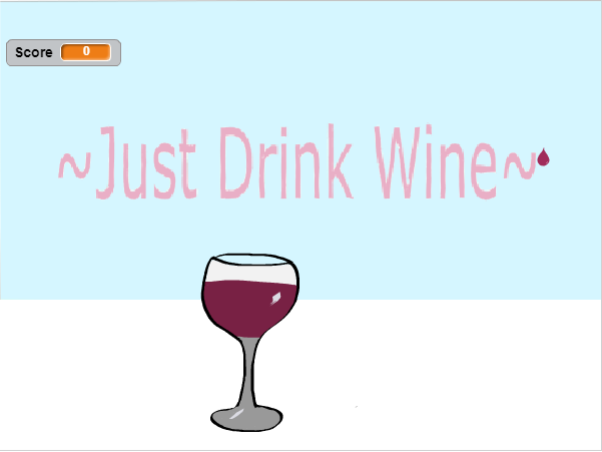

Projects
Hacktoberfest 2018
I participated for the first time in the 2018 Hacktoberfest! I made 6 pull requets for simple HTML problems to get used to contributing to opensourced projects and learn how to properly use GitHub. I had a lot of fun and it really motivated me to learn more programming languages so that I can contribute more to this event, and others like it, next year.
LinkField Report
JavaScript Clock
Using basic javascript and some jquery I created a military time clock. The basics of the clock are getting the date and time from the computer and then getting just the hours, minutes and seconds to show on the HTML page. The last thing I wanted to make sure of was that the clock continued to run past the initial point where the time was being called so I made sure the page refreshed every 1 second and added an extra 0 to the clock when the time was in the single digits. I had help for this project in the form of W3Schools, which provided a reference library for me, and StackOverflow which helped me when I ran into problems with my clock not changing.
LinkScratch Project
My Scratch project is a simple catching game where you catch droplets of wine in a wine glass. The purpose of the game was to get familar with boolean logic and basic programming structure without getting into any actual code.
Link